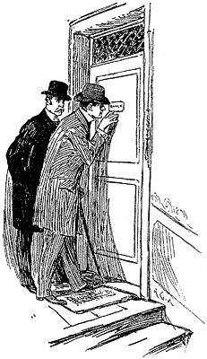
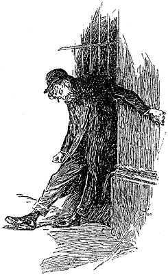

It was one o'clock when we left No. 3, Lauriston Gardens. Sherlock Holmes led me to the nearest telegraph office, whence he dispatched a long telegram. He then hailed a cab, and ordered the driver to take us to the address given us by Lestrade.
"There is nothing like first-hand evidence," he remarked; "as a matter of fact, my mind is entirely made up upon the case, but still we may as well learn all that is to be learned."
"You amaze me, Holmes," said I. "Surely you are not as sure as you pretend to be of all those particulars which you gave."
"There's no room for a mistake," he answered. "The very first thing which I observed on arriving there was that a cab had made two ruts with its wheels close to the curb. Now, up to last night, we have had no rain for a week, so that those wheels which left such a deep impression must have been there during the night. There were the marks of the horse's hoofs, too, the outline of one of which was far more clearly cut than that of the other three, showing that that was a new shoe. Since the cab was there after the rain began, and was not there at any time during the morning—I have Gregson's word for that—it follows that it must have been there during the night, and, therefore, that it brought those two individuals to the house."
"That seems simple enough," said I; "but how about the other man's height?"
"Why, the height of a man, in nine cases out of ten, can be told from the length of his stride. It is a simple calculation enough, though there is no use my boring you with figures. I had this fellow's stride both on the clay outside and on the dust within. Then I had a way of checking my calculation. When a man writes on the wall, his instinct leads him to write about the level of his own eyes. Now that writing was just over six feet from the ground. It was child's play."
"And his age?" I asked.
"Well, if a man can stride four and a-half feet without the smallest effort, he can't be quite in the sere and yellow. That was the breadth of a puddle on the garden walk which he had evidently walked across. Patent-leather boots had gone round, and Square-toes had hopped over. There is no mystery about it at all. I am simply applying to ordinary life a few of those precepts of observation and deduction which I advocated in that article. Is there anything else that puzzles you?"
"The finger-nails and the Trichinopoly," I suggested.
"The writing on the wall was done with a man's fore-finger dipped in blood. My glass allowed me to observe that the plaster was slightly scratched in doing it, which would not have been the case if the man's nail had been trimmed. I gathered up some scattered ash from the floor. It was dark in colour and flakey—such an ash as is only made by a Trichinopoly. I have made a special study of cigar ashes—in fact, I have written a monograph upon the subject. I flatter myself that I can distinguish at a glance the ash of any known brand either of cigar or of tobacco. It is just in such details that the skilled detective differs from the Gregson and Lestrade type."
"And the florid face?" I asked.
"Ah, that was a more daring shot, though I have no doubt that I was right. You must not ask me that at the present state of the affair."
I passed my hand over my brow. "My head is in a whirl," I remarked; "the more one thinks of it the more mysterious it grows. How came these two men—if there were two men—into an empty house? What has become of the cabman who drove them? How could one man compel another to take poison? Where did the blood come from? What was the object of the murderer, since robbery had no part in it? How came the woman's ring there? Above all, why should the second man write up the German word RACHE before decamping? I confess that I cannot see any possible way of reconciling all these facts."
My companion smiled approvingly.
"You sum up the difficulties of the situation succinctly and well," he said. "There is much that is still obscure, though I have quite made up my mind on the main facts. As to poor Lestrade's discovery, it was simply a blind intended to put the police upon a wrong track, by suggesting Socialism and secret societies. It was not done by a German. The A, if you noticed, was printed somewhat after the German fashion. Now a real German invariably prints in the Latin character, so that we may safely say that this was not written by one, but by a clumsy imitator who overdid his part. It was simply a ruse to divert inquiry into a wrong channel. I'm not going to tell you much more of the case, Doctor. You know a conjuror gets no credit when once he has explained his trick; and if I show you too much of my method of working, you will come to the conclusion that I am a very ordinary individual after all."
"I shall never do that," I answered ; "you have brought detection as near an exact science as it ever will be brought in this world."
My companion flushed up with pleasure at my words, and the earnest way in which I uttered them. I had already observed that he was as sensitive to flattery on the score of his art as any girl could be of her beauty.
"I'll tell you one other thing," he said. "Patent-leathers and Square-toes came in the same cab, and they walked down the pathway together as friendly as possible—arm-in-arm, in all probability. When they got inside, they walked up and down the room—or rather, Patent-leathers stood still while Square-toes walked up and down. I could read all that in the dust; and I could read that as he walked he grew more and more excited. That is shown by the increased length of his strides. He was talking all the while, and working himself up, no doubt, into a fury. Then the tragedy occurred. I've told you all I know myself now, for the rest is mere surmise and conjecture. We have a good working basis, however, on which to start. We must hurry up, for I want to go to Halle's concert to hear Norman Neruda this afternoon."
This conversation had occurred while our cab had been threading its way through a long succession of dingy streets and dreary by-ways. In the dingiest and dreariest of them our driver suddenly came to a stand. "That's Audley Court in there," he said, pointing to a narrow slit in the line of dead-coloured brick. "You'll find me here when you come back."
Audley Court was not an attractive locality. The narrow passage led us into a quadrangle paved with flags and lined by sordid dwellings. We picked our way among groups of dirty children, and through lines of discoloured linen, until we came to Number 46, the door of which was decorated with a small slip of brass on which the name Rance was engraved. On inquiry we found that the constable was in bed, and we were shown into a little front parlour to await his coming.
He appeared presently, looking a little irritable at being disturbed in his slumbers. "I made my report at the office," he said.
Holmes took a half-sovereign from his pocket and played with it pensively. "We thought that we should like to hear it all from your own lips," he said.
"I shall be most happy to tell you anything I can," the constable answered, with his eyes upon the little golden disk.
"Just let us hear it all in your own way as it occurred."
Rance sat down on the horse-hair sofa, and knitted his brows, as though determined not to omit anything in his narrative.
"I'll tell it ye from the beginning," he said. "My time is from ten at night to six in the morning. At eleven there was a fight at the 'White Hart'; but bar that all was quiet enough on the beat. At one o'clock it began to rain, and I met Harry Murcher—him who has the Holland Grove beat—and we stood together at the corner of Henrietta Street a-talkin'. Presently—maybe about two or a little after—I thought I would take a look round and see that all was right down the Brixton Road. It was precious dirty and lonely. Not a soul did I meet all the way down, though a cab or two went past me. I was a-strollin' down, thinkin' between ourselves how uncommon handy a four of gin hot would be, when suddenly the glint of a light caught my eye in the window of that same house. Now, I knew that them two houses in Lauriston Gardens was empty on account of him that owns them who won't have the drains seed too, though the very last tenant what lived in one of them died o' typhoid fever. I was knocked all in a heap, therefore, at seeing a light in the window, and I suspected as something was wrong. When I got to the door——"
"You stopped, and then walked back to the garden gate," my companion interrupted. "What did you do that for?"
Rance gave a violent jump, and stared at Sherlock Holmes with the utmost amazement upon his features.
"Why, that's true sir," he said; "though how you come to know it, Heaven only knows. Ye see when I got up to the door, it was so still and so lonesome, that I thought I'd be none the worse for some one with me. I ain't afeard of anything on this side o' the grave; but I thought that maybe it was him that died o' the typhoid inspecting the drains what killed him. The thought gave me a kind o' turn, and I walked back to the gate to see if I could see Murcher's lantern, but there wasn't no sign of him nor of any one else."
"There was no one in the street?"
"Not a livin' soul, sir, nor as much as a dog. Then I pulled myself together and went back and pushed the door open. All was quiet inside, so I went into the room where the light was a-burnin'. There was a candle flickering on the mantelpiece—a red wax one—and by its light I saw——"
"Yes, I know all that you saw. You walked round the room several times, and you knelt down by the body, and then you walked through and tried the kitchen door, and then——"
John Rance sprang to his feet with a frightened face and suspicion in his eyes. "Where was you hid to see all that?" he cried. "It seems to me that you knows a deal more than you should."
Holmes laughed and threw his card across the table to the constable. "Don't get arresting me for the murder," he said. "I am one of the hounds and not the wolf; Mr. Gregson or Mr. Lestrade will answer for that. Go on, though. What did you do next?"
Rance resumed his seat, without, however, losing his mystified expression. "I went back to the gate and sounded my whistle. That brough Murcher and two more to the spot."
"Was the street empty then?"
"Well, it was, as far as anybody that could be of any good goes."
"What do you mean?"
The constable's features broadened into a grin. "I've seen many a drunk chap in my time," he said, "by never any one so cryin' drunk as that cove. He was at the gate when I came out, a-leaning up ag'in the railings, and singin' at the pitch o' his lungs about Columbine's New-fangled Banner, or some such stuff. He couldn't stand, far less help."
"What sort of a man was he?" asked Sherlock Holmes.
John Rance appeared to be somewhat irritated at this digression: "He was an uncommon drunk sort o' man," he said. "He'd ha' found hisself in the station if we hadn't been so took up."
"His face—his dress—didn't you notice them?" Holmes broke in impatiently.
"I should think I did notice them, seeing that I had to prop him up—me and Murcher between us. He was a long chap, with a red face, the lower part muffled round——"
"That will do," cried Holmes. "What became of him?"
"We'd enough to do without lookin' after him," the policeman said, in an aggrieved voice. "I'll wager he found his way home all right."
"How was he dressed?"
"A brown overcoat."
"Had he a whip in his hand?"
"A whip—no."
"He must have left it behind," muttered my companion. "You didn't happen to see or hear a cab after that?"
"No."
"There's a half-sovereign for you," my companion said, standing up and taking his hat. "I am afraid, Rance, that you will never rise in the force. That head of yours should be for use as well as ornament. You might have gained your sergeant's stripes last night. The man whom you held in your hands is the man who holds the clue of this mystery, and whom we are seeking. There is no use of arguing about it now; I tell you that it is so. Come along, Doctor."
We started off for the cab together, leaving our informant incredulous, but obviously uncomfortable.
"The blundering fool!" Holmes said, bitterly, as we drove back to our lodgings. "Just to think of his having such an incomparable bit of good luck, and not taking advantage of it."
"I am rather in the dark still. It is true that the description of this man tallies with your idea of the second party in this mystery. But why should he come back to the house after leaving it? That is not the way of criminals."
"The ring, man, the ring: that was what he came back for. If we have no other way of catching him, we can always bait our line with the ring. I shall have him, Doctor—I'll lay you two to one that I have him. I must thank you for it all. I might not have gone but for you, and so have missed the finest study I ever came across: a study in scarlet, eh? Why shouldn't we use a little art jargon. There's the scarlet thread of murder running through the colourless skein of life, and our duty is to unravel it, and isolate it, and expose every inch of it. And now for lunch, and then for Norman Neruda. Her attack and her bowing are splendid. What's that little thing of Chopin's she plays so magnificently: Tra-la-la-lira-lira-lay."
Leaning back in the cab, this amateur blood-hound carolled away like a lark while I meditated upon the manysidedness of the human mind.